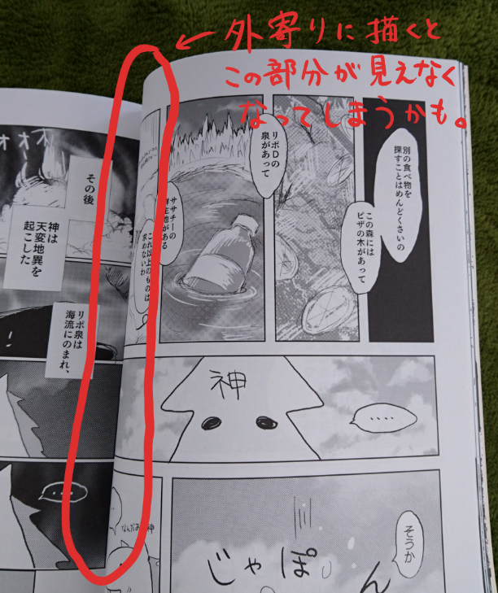

原稿の作り方講座
アナログ提出する場合
用意するもの
・B5同人用原稿用紙
※紙の大きさはA4ですが、枠の大きさがB5です。店頭で2種類あったら小さいほうです。
・黒いペン
※ボールペンは少し青みがかるので、専用のお絵かき用ペンを購入してください。
本格的なあなたは丸ペンやGペンと黒インクを。
・トーン（必要であれば）
原稿用紙の使い方

1.外枠
一番外側の線です。絵は基本的にここまで描いてください。
2.断ち切り線（仕上がり線）
外から二番目にある線です。絵はこの線までしか印刷されません。
印刷ズレが生じる可能性があるため、念のため外枠まで描いてください。
3.内枠
一番内側にある線です。ここまでは製本したときにはっきり見えることが保証されています。
重要な部分や文字はこの中に描いてください。
実際に漫画を描くとき、コマ割りは内枠を基準にして描きます。
目立たせたいコマは外枠まで描きます。（この場合は右ページを想定していますが、左外枠まではみ出すと漫画が見えないことがあるので、左にはみ出さないよう注意）

パソコンのペイントソフトを使って描きたい場合
デジタルで描きたいのにアナログ提出しか受け付けてくれない！っていうときの提出方法の１つをお教えします。
※デジタルでの提出方法についての詳細は「デジタル提出する場合」を参照してください。
1.B5同人用原稿用紙をスキャンしてパソコンに取り込む（内枠のサイズはB5ですが、用紙サイズはA4です。お間違えのなきよう）
2.ペイントソフトでスキャンしたファイルを開き、その上にレイヤーを作って、原稿用紙の線を目印に原稿を書く
3.原稿が完成したら、スキャンした原稿用紙のレイヤーを消す
4.そのままA4コピー用紙に印刷して、本物の原稿用紙に切り貼りして提出（または直接原稿用紙に印刷）
デジタル提出する場合
用意するもの
・パソコン
・ペイントソフト（中の人のオススメ無料ソフトはメディバンペイントです）
・ペンタブレット（ペンタブ。マウスがペンになった感じの機械です）
原稿の作り方
ペイントソフトで、編集長が指定したテンプレートを開きます。
※テンプレートとは、デジタル版の原稿用紙のようなものです。dpiやサイズはテンプレートサイズから変更しないでください。
あとはテンプレートに書いてある指示に従って原稿を作成し、編集長指定の方法で提出すれば完了です。
一般的にはテンプレートの上にレイヤーを作って描き、書き終わったらレイヤーを１つに結合して、拡張子「psd」で提出する方式がほとんどです。が、詳細は編集長やテンプレートの指示に従ってください。
よくあった質問
Q:アナログ原稿用紙の青い線は印刷されないんですか？
A:されないんです。黒で描いた線のみ印刷されます。
部誌の作り方ダイジェスト
Googleドライブでの提出方法
当サークルでは、デジタル原稿はGoogleドライブを介して提出することが多いため、紹介しておきます。
1．指定されたドライブURLにアクセスしたら、ログインのボタンがあると思うのでログインします。
自分のアカウントがない場合はお手数ですがGoogleアカウントを作成してください。
2．ログインするとドライブに追加というボタンに変わってると思うので、それをクリックしてください。
3．Googleドライブの「マイドライブ」に指定のファイルが追加されていると思うので、そのファイルを開きます。
4. 「新規」からフォルダを作成したり原稿ファイルをアップロードしたりできるので、編集長の指示に従ってアップロードしてください。
宣伝

中の人がデジタルイラストの描き方を解説しています。
よろしければどうぞ。
© Painting&Comics_ritsumeikan.